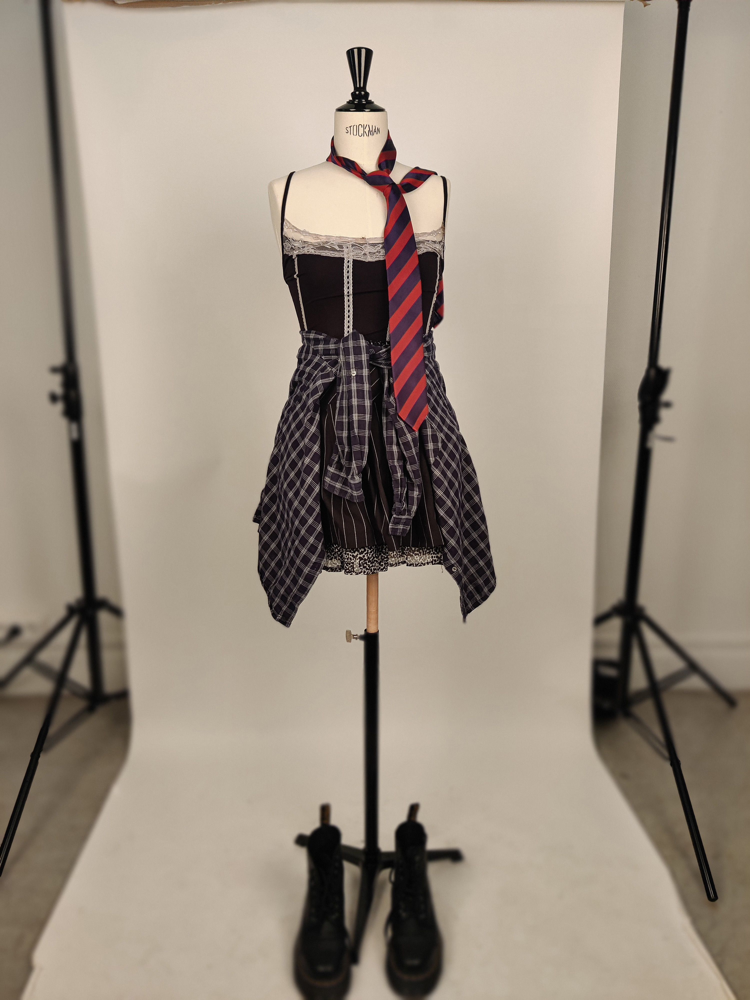

"Focusing on alignment, layout hierarchy, and editorial grids to document fashion stories and textures."
You Might Like
Macro-trend research, zero waste pattern blueprinting, and 100% upcycling fabrication methodology details.
Completed at École de Condé Nancy. Curation of a personal forecasting magazine paired with sustainable upcycled designs.
B3 • NANCY
Trends & Upcycling
Core Competencies
Sustainability: Upcycling, textile reuse, and circular patterns.
Forecasting: Weak signals, cultural analytics, and macro trends.
Blueprint: Zero waste pattern geometry and fabric conservation.
Upcycling Conception
"Analyzing upcycling methodologies to formulate a circular roadmap for zero waste fashion lines."
You Might Like

Pattern specifications, tailoring metrics, and textile composition analytics compiled during the fabrication phase.
Completed at École de Condé Nancy. Focus on core design fundamentals, form exploration, and structural material manipulation.
NANCY ACADEMY
Bachelor I: Fundamentals
My first year at École de Condé Nancy was an immersive dive into the fundamentals of design across all major fields. Within a multidisciplinary curriculum, I discovered graphics, space, product, and fashion design. This transversal approach enriched my visual culture and built a solid project methodology.
Core Competencies
Methodology: Visual research, concept mapping, and ideation drafting.
Mediums: Technical drawing, color theory, and volumetric study.
Exploration: Transversal experimentation across physical and textile mediums.
Visual Research & Conception
A look into the initial charcoal studies and raw drapery layouts that formed the basis of the final silhouette execution.